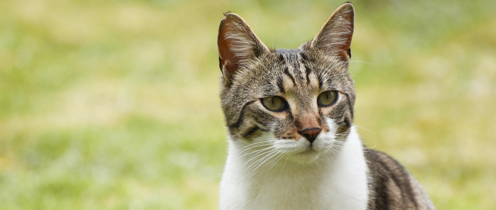
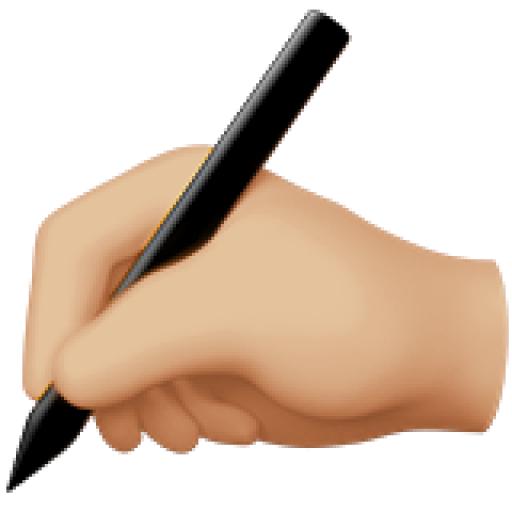
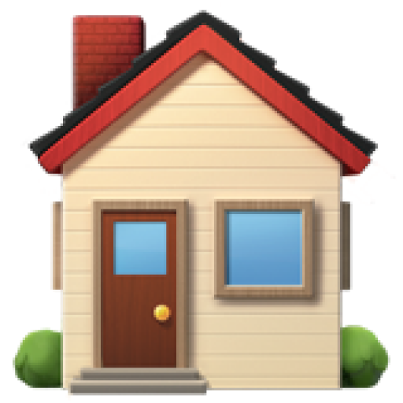

A Amizade Verdadeira
Não Se Compra
Aqui, você não está apenas navegando em um site; está abrindo a porta para uma das relações mais gratificantes da sua vida. Cada perfil que você visita é uma história única esperando por um final feliz.
Ver os AnimaisAtuação Exclusiva Em PERNAMBUCO
Do litoral ao sertão, existem centenas de animais esperando por um recomeço. O "Meu Futuro Amigo" nasceu com o propósito exclusivo de conectar os pets de Pernambuco a pessoas incríveis como você. Concentrando nossos esforços localmente, fortalecemos a causa animal no nosso estado e garantimos que a ajuda chegue mais rápido e de forma eficiente a quem mais precisa.
Sinta-se em casa para navegar. Seu futuro melhor amigo já está aqui, esperando por uma chance de fazer parte da sua família.
O Que Você Deseja Fazer?
Estou em busca de um novo amigo. Quero explorar a galeria de cães e gatos, conhecer suas histórias e encontrar meu futuro companheiro.
Quero AdotarTenho um animal que precisa de um novo lar. Gostaria de usar a plataforma para encontrar uma família segura e responsável para ele.
Quero Divulgar Um Animal
Por que Adotar?

Nesse exato momento, existem milhares de futuros companheiros esperando um humano para chamar de seu.

E não há recompensa maior do que vê-los se tornando aquela coisinha alegre e saudável depois de uma boa dose de cuidado e carinho.

Pensando bem, a pergunta é outra: se você pode mudar o destino de um animal de rua, por que não faria isso?

Processo de Adoção
Adotar é Simples Assim
Escolha Seu Pet
Navegue pela nossa galeria e conheça os cães e gatos que esperam por um lar. Leia suas histórias e se apaixone.

Preencha o Formulário
Gostou de um animal?
Clique em 'Quero Adotar' e preencha o formulário de interesse. É um passo simples, rápido e essencial.
Aguarde nosso Contato
Nossa equipe dedicada irá analisar seu perfil com todo o cuidado e carinho, e em breve entraremos em contato para os próximos passos.

Leve para Casa
Se a conexão for mútua, você assina nosso termo de adoção responsável e já pode levar seu novo e fiel companheiro para o seu novo lar.

Adotados Recentemente
Eles Encontraram um Lar
Gostou de ver essas carinhas felizes? A próxima história de final feliz pode ser a sua. Veja como a vida de outros adotantes e seus novos amigos mudou para sempre.
Mais Finais Felizes